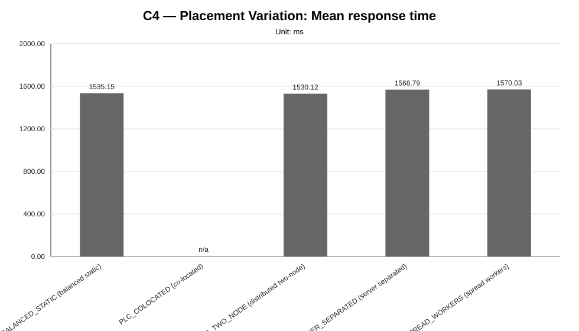
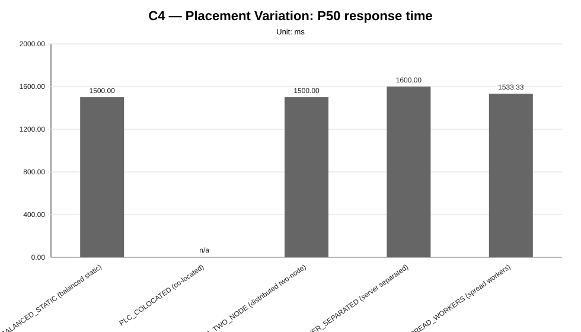
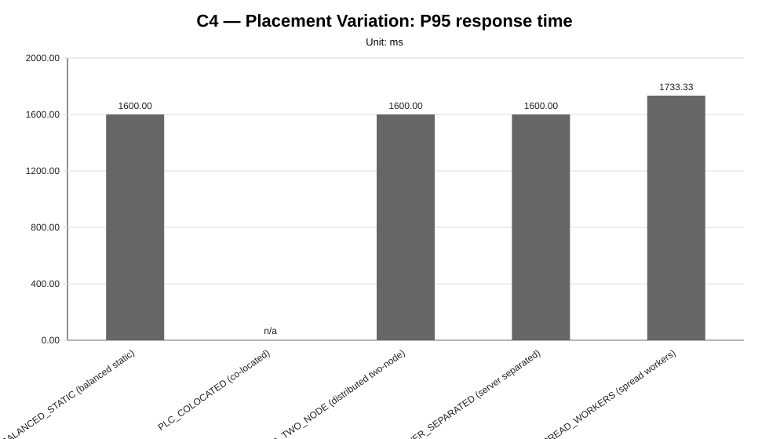
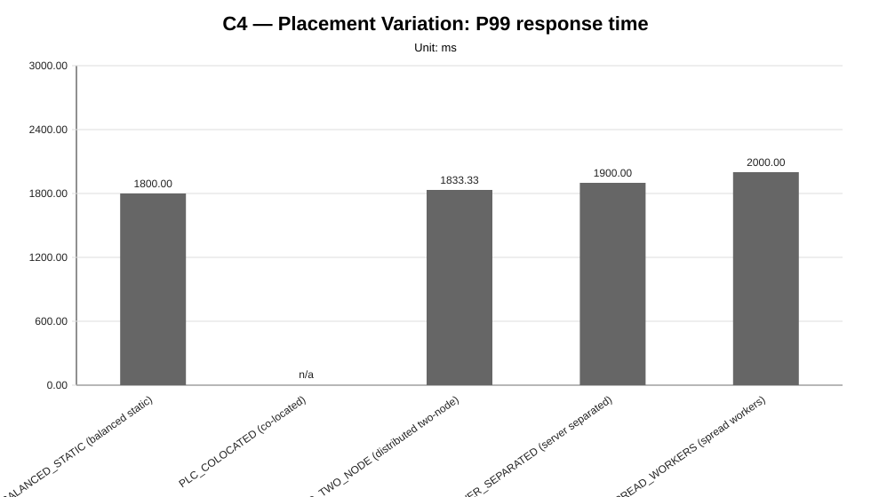
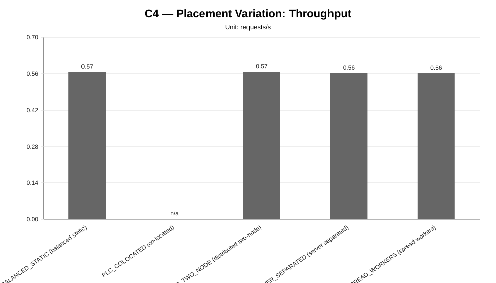
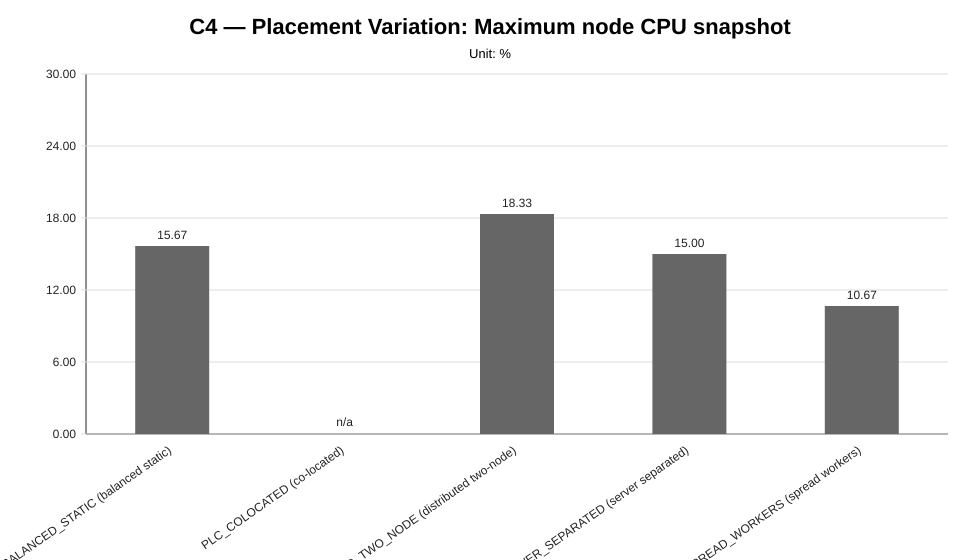
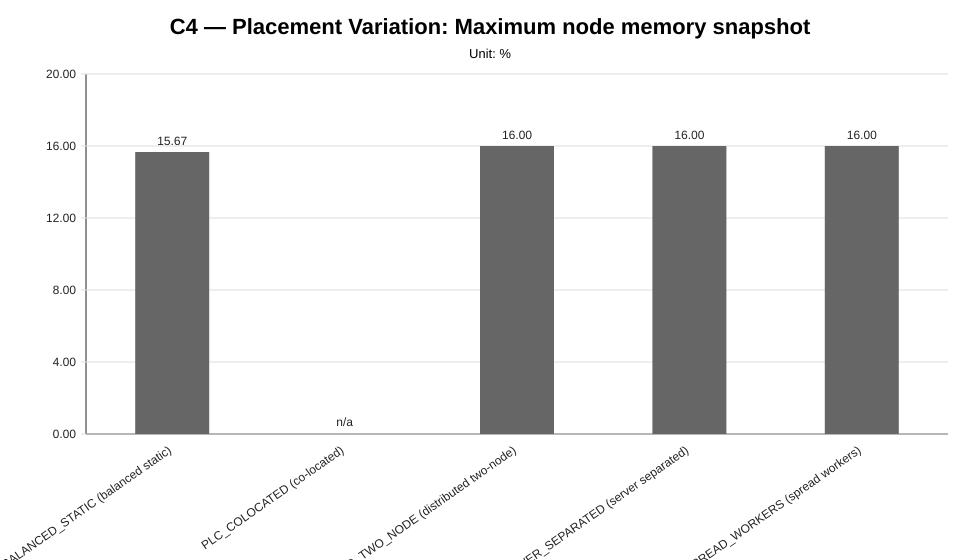
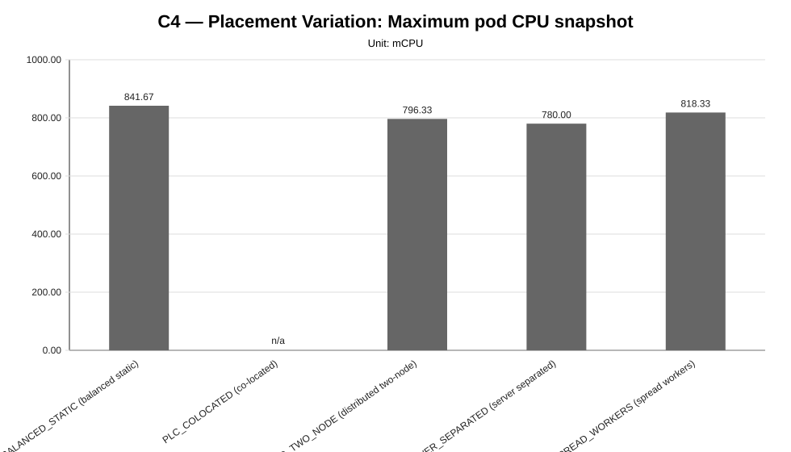
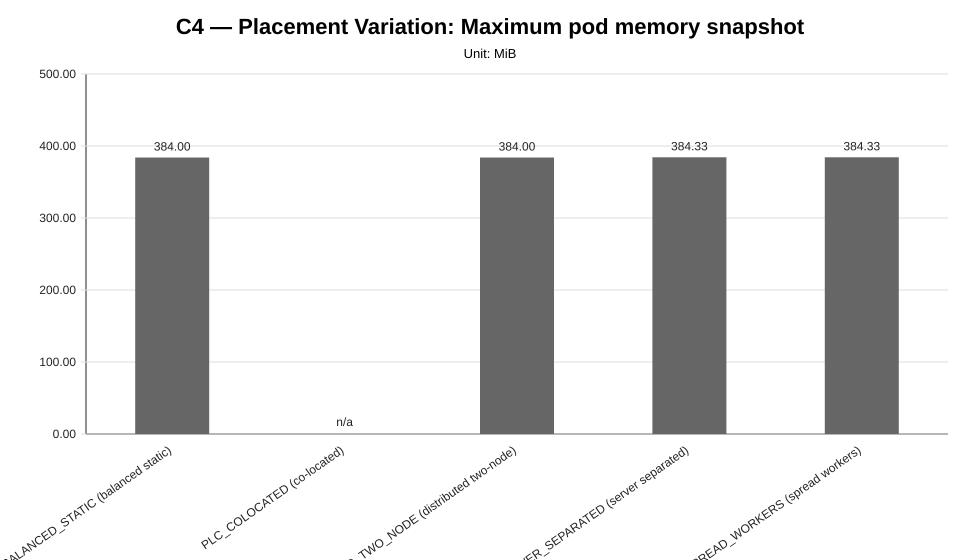

Cycle ID: C4
Sweep: placement-variation
Reporting Profile: RP_C4_PLACEMENT_VARIATION
Reporting ID: REP_C4_20260619T174611Z
Generated at UTC: 2026-06-19T17:46:54Z
This sweep-specific report isolates Placement Variation so that the varied dimension, fixed dimensions, measured values, unsupported evidence and diagnosis-based reading can be inspected without navigating the full consolidated report.
Execution status: partially_measured
Execution note: At least one configured scenario has measured benchmark samples, while other scenarios are missing or unsupported.
Varied dimension: placement profile
Fixed dimensions: infrastructure=INFRA_C4_1CP_4W_8C16G, model=M1, LocalAI worker-count=W4, workload=WL2, worker node capacity=8 vCPU / 16 GiB.
Reference scenario within the sweep: PLC_SPREAD_WORKERS
| Scenario count | Measured | Unsupported | Missing |
|---|---|---|---|
| 5 | 4 | 1 | 0 |
This table is derived from resolved scenario metadata. A parameter is marked as controlled only when it has the same effective value across all scenarios in the sweep.
| Parameter | Resolved value | Interpretation |
|---|---|---|
| Model | llama-3.2-1b-instruct:q4_k_m | controlled |
| Worker count | 4 | controlled |
| Placement | varies across scenarios (5 values) | varied or scenario-specific |
| Workload | users=2, spawnRate=1, runTime=2m | controlled |
| Topology | varies across scenarios (5 values) | varied or scenario-specific |
| Server manifest | varies across scenarios (2 values) | varied or scenario-specific |
| Prompt | Reply with only READY. | controlled |
| Temperature | 0.1 | controlled |
| Request timeout (s) | 120 | controlled |
| Scenario | Status | Varied value (placement profile) | Model | Worker count | Placement | Workload | Timeout (s) |
|---|---|---|---|---|---|---|---|
PLC_BALANCED_STATIC | measured | balanced static | llama-3.2-1b-instruct:q4_k_m | 4 | balanced_static_server_with_partial_worker_colocation | users=2, spawnRate=1, runTime=2m | 120 |
PLC_COLOCATED | unsupported_under_current_constraints | co-located | llama-3.2-1b-instruct:q4_k_m | 4 | colocated_server_and_workers_on_genai_pb_worker_02 | users=2, spawnRate=1, runTime=2m | 120 |
PLC_DISTRIBUTED_TWO_NODE | measured | distributed two-node | llama-3.2-1b-instruct:q4_k_m | 4 | distributed_workers_across_two_provider_worker_nodes | users=2, spawnRate=1, runTime=2m | 120 |
PLC_SERVER_SEPARATED | measured | server separated | llama-3.2-1b-instruct:q4_k_m | 4 | server_separated_from_spread_workers | users=2, spawnRate=1, runTime=2m | 120 |
PLC_SPREAD_WORKERS | measured | spread workers | llama-3.2-1b-instruct:q4_k_m | 4 | spread_workers_across_four_provider_worker_nodes | users=2, spawnRate=1, runTime=2m | 120 |
This compact table reports the core indicators used to read the sweep at a glance. Detailed percentiles, deltas and resource snapshots are reported in the following extended table.
| Scenario | Description | Status | Sample count | Mean response time (ms) | P95 response time (ms) | Throughput (requests/s) | Unsupported evidence |
|---|---|---|---|---|---|---|---|
PLC_BALANCED_STATIC | PLC_BALANCED_STATIC (balanced static) | measured | 3 | 1535.15 | 1600.00 | 0.5666 | |
PLC_COLOCATED | PLC_COLOCATED (co-located) | unsupported_under_current_constraints | 0 | n/a | n/a | n/a | benchmark_precheck, cluster_nodes_ready, metrics_api_and_capacity, namespace_active, namespace_pods_healthy, none_or_within_strict_threshold, pending_pod, service_endpoint_and_model, worker_nodes_expected |
PLC_DISTRIBUTED_TWO_NODE | PLC_DISTRIBUTED_TWO_NODE (distributed two-node) | measured | 3 | 1530.12 | 1600.00 | 0.5676 | |
PLC_SERVER_SEPARATED | PLC_SERVER_SEPARATED (server separated) | measured | 3 | 1568.79 | 1600.00 | 0.5623 | |
PLC_SPREAD_WORKERS | PLC_SPREAD_WORKERS (spread workers) | measured | 3 | 1570.03 | 1733.33 | 0.5619 |
This secondary table keeps the additional metrics aligned with the technical diagnosis while avoiding an excessively wide primary summary table.
| Scenario | P50 response time (ms) | P99 response time (ms) | Mean response time delta (%) | P95 response time delta (%) | Throughput delta (%) | Max node CPU snapshot (%) | Max node memory snapshot (%) | Max pod CPU snapshot (mCPU) | Max pod memory snapshot (MiB) |
|---|---|---|---|---|---|---|---|---|---|
PLC_BALANCED_STATIC | 1500.00 | 1800.00 | -2.22 | -7.69 | 0.84 | 15.67 | 15.67 | 841.67 | 384.00 |
PLC_COLOCATED | n/a | n/a | n/a | n/a | n/a | n/a | n/a | n/a | n/a |
PLC_DISTRIBUTED_TWO_NODE | 1500.00 | 1833.33 | -2.54 | -7.69 | 1.01 | 18.33 | 16.00 | 796.33 | 384.00 |
PLC_SERVER_SEPARATED | 1600.00 | 1900.00 | -0.08 | -7.69 | 0.07 | 15.00 | 16.00 | 780.00 | 384.33 |
PLC_SPREAD_WORKERS | 1533.33 | 2000.00 | 0.00 | 0.00 | 0.00 | 10.67 | 16.00 | 818.33 | 384.33 |
This table makes the placement dimension explicit. Infrastructure, model, workload and LocalAI worker count are kept fixed while server and RPC-worker placement changes.
| Scenario | Placement | Profile | Server node | Worker node map | Communication distance | Resource contention |
|---|---|---|---|---|---|---|
PLC_BALANCED_STATIC | balanced static | PL_BALANCED_STATIC | genai-pb-worker-02 | localai-rpc-a=genai-pb-worker-01, localai-rpc-b=genai-pb-worker-02, localai-rpc-c=genai-pb-worker-03, localai-rpc-d=genai-pb-worker-02 | medium | medium |
PLC_COLOCATED | co-located | PL_COLOCATED | genai-pb-worker-02 | localai-rpc-a=genai-pb-worker-02, localai-rpc-b=genai-pb-worker-02, localai-rpc-c=genai-pb-worker-02, localai-rpc-d=genai-pb-worker-02 | minimal | highest |
PLC_DISTRIBUTED_TWO_NODE | distributed two-node | PL_DISTRIBUTED_TWO_NODE | genai-pb-worker-02 | localai-rpc-a=genai-pb-worker-01, localai-rpc-b=genai-pb-worker-02, localai-rpc-c=genai-pb-worker-01, localai-rpc-d=genai-pb-worker-02 | medium | medium_high |
PLC_SERVER_SEPARATED | server separated | PL_SERVER_SEPARATED | genai-pb-worker-01 | localai-rpc-a=genai-pb-worker-02, localai-rpc-b=genai-pb-worker-03, localai-rpc-c=genai-pb-worker-04, localai-rpc-d=genai-pb-worker-02 | highest | low |
PLC_SPREAD_WORKERS | spread workers | PL_SPREAD_WORKERS | genai-pb-worker-02 | localai-rpc-a=genai-pb-worker-01, localai-rpc-b=genai-pb-worker-02, localai-rpc-c=genai-pb-worker-03, localai-rpc-d=genai-pb-worker-04 | higher | lowest |
comparative_signal_available, confidence: medium).medium).medium).medium).








not_executed sweep means that neither measurement CSV files nor unsupported-scenario evidence were found for any configured scenario in that family.